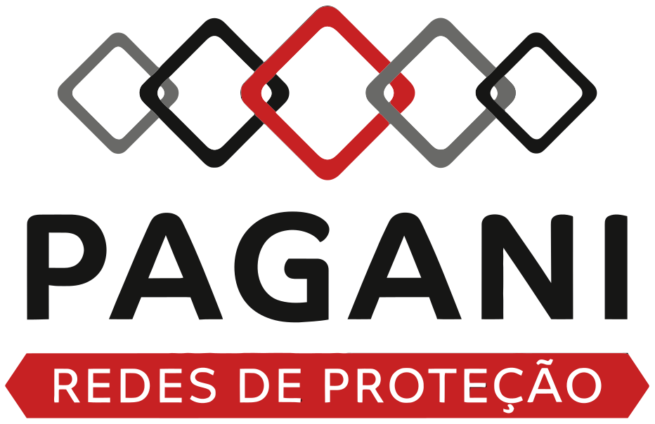

O sistema visual de uma empresa catarinense com mais de 20 anos protegendo pessoas, crianças e animais. Base clara e leve — os cinzas conduzem; o vermelho aparece só onde importa.

A base do sistema: quem é a marca, como ela se escreve, quais cores e quais medidas. Tudo o que vem depois consome exatamente isto.
Diagnóstico da marca, ideia-mãe e os 5 princípios que julgam cada decisão.
Logo 1 a 5, numeradas para escolher por número.
Versões auxiliares, área de respiro e o que evitar.
Três combinações, a escolha justificada e a escala.
Paleta clara com acento vermelho, papéis semânticos e contraste.
Espaçamento, raios, sombras, movimento e grid.
Biblioteca real em components/components.css — classes .pg-* que consomem os tokens. 39 blocos documentados.
Botões, links e o botão de WhatsApp.
Header, menu, rodapé e caminho de navegação.
Campos, seleção, validação e mensagens de erro.
Cards, listas, tabelas e blocos de dúvidas.
Alertas, estados vazios e carregamento.
Imagens, galeria e depoimentos.
Pagani Redes · Design System — construído no Claude Design. Esta é uma cópia publicada para revisão; a fonte de verdade é o projeto no Claude Design.